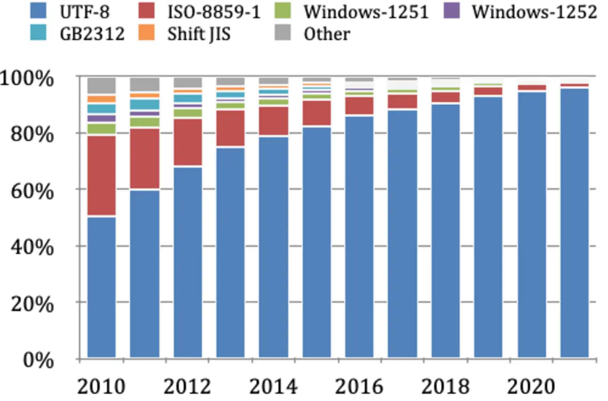

短答
UTF-8 是一种字符编码，可以在同一个 HTML 文件里容纳中文和拉丁文字。
这张图把 UTF-8 和几种较旧的编码画成年份上的堆叠柱。蓝色系列是 UTF-8，图中它在较晚的年份里是较大的系列。本文不把任何一根柱当作 Mika、客户或整个网页的指标。健康规则是本地的：声明 UTF-8，并发送 UTF-8。
定义
双语页面如果存成 GB2312 或 Windows-1252，模板却写着 UTF-8，就会破坏其中一种语言。HTTP 字符集和 meta 字符集应该与文件一致。开头意外留下的字节顺序标记会把 doctype 往下推，并扰乱解析器。编辑器和构建工具必须把模板存成 UTF-8，并且不要再加一次转换。图例是一份名称列表，不是一份要故意同时支持的编码菜单。
页面基础里包括什么
把 HTML 存成 UTF-8，并在响应中声明 UTF-8。
检查 Content-Type 的字符集、meta charset，以及一个同时含有中文句子和英文型号的页面的实际字节。如果三者有一个不一致，就修流水线，而不是再加一个 meta。不要把图上的柱当作可以省略声明的理由。一种流行、但你并没有发送的编码，仍然是错误的编码。

要检查什么
- 文件以 UTF-8 保存
- HTTP 字符集和 meta 都写着 UTF-8
- 获取结果中的中文和拉丁字符串完好
- 构建中没有额外转码
- 获取一条双语产品 URL
一个结构示例
中文产品页在编辑器里正确显示系列名，部署后却变成替换字符，因为构建重新编码了文件，meta 仍写着 UTF-8。修复是停止这次转码。一次获取显示的系列名与编辑器保存的字符相同。没有从图表抄任何百分比。
它不声称什么
发送 UTF-8 不保证排名或引用。
Mika Visibility 把它归到哪里
Mika Visibility 把标题、标题层级、语言和媒体基础归在 SEO 健康的内容与结构检查里。它们帮助页面被理解。它们不是 SEO 增长——增长问的是还缺什么覆盖——它们也不保证回答产品会引用这个页面。
图表是编码的历史图片。唯一的检查是你的文件和你的声明。
常见问题
UTF-8 能在一个文件里容纳什么？
UTF-8 是一种字符编码，可以在同一个 HTML 文件里容纳中文和拉丁文字。
响应应该声明什么？
把 HTML 存成 UTF-8，并在响应中声明 UTF-8。
发送 UTF-8 能保证排名吗？
发送 UTF-8 不保证排名或引用。
下一步
做一次结构化的 SEO + GEO 审计，查看健康发现、增长缺口和可以执行的蓝图。
更清晰的实体、答案、证据和上下文，会让页面更容易被理解与引用。任何回答产品中的结果都不作保证。